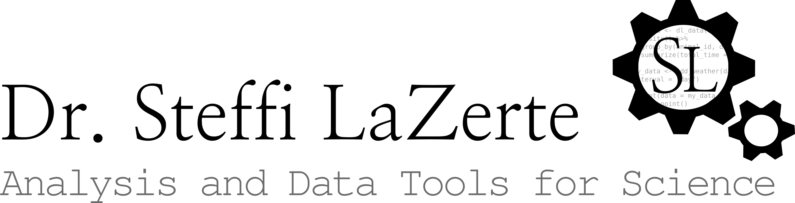

Brandon University
Applied Quantitative Methods in Geography
Participatory science:
Oh, the Places You’ll Go!
steffilazerte
@steffilazerte@fosstodon.org
steffilazerte.ca

Compiled: 2025-02-06
Types of projects
Projects developed by researchers,
people sign up to participate
Projects developed
closely with/by the community
Examples
Christmas Bird Count (Birds Canada)
Woodpecker Cavity Cam (University of Minnesota)
Are we alone in the universe? (NASA)
Steffi LaZerte
Examples
Community Water Monitoring (Keepers of the Water)
Berry Contamination Study (WBEA)
 Gertrud Nürnberg
Gertrud Nürnberg
eBird

Migration and Distribution
Jared Sonnleitner, Steffi LaZerte, Ann McKellar, Nancy Flood, Matt Reudink
Gregory Smith Eastern Bluebirds
 Elaine R. Wilson Mountain Bluebirds
Elaine R. Wilson Mountain Bluebirds
Don Faulkner Western Bluebirds
Migration and Distribution
Erik Prytula, Matt Reudink, Steffi LaZerte, Jared Sonnleitner, Ann McKellar

 Kat+Sam
Kat+Sam
See also Birds Canada Swift Watch
Turkey Vulture Migration
Don Kramer, Daniel Donnecke, Steffi LaZerte

Daniel Donnecke
bbsBayes2 R package
Adam C. Smith, Brandon Edwards, Steffi LaZerte
- Breeding Bird Survey (BBS) data
- Spatially explicit models
- Informs many species at risk assessments

Secchi Disk Dip
- North American Lake Management Society (NALMS)
- Volunteer monitors record water transparency
Gertrud Nürnberg
NALMS